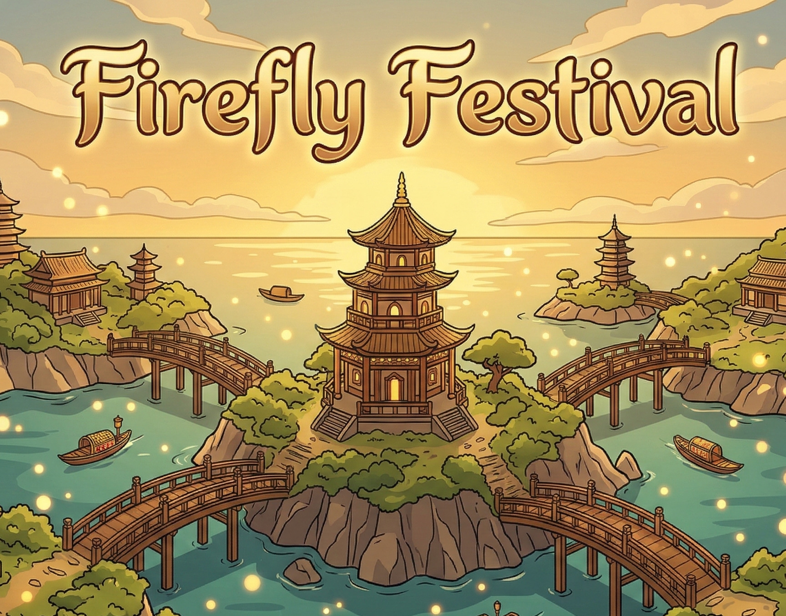
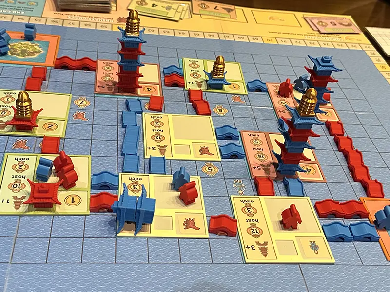
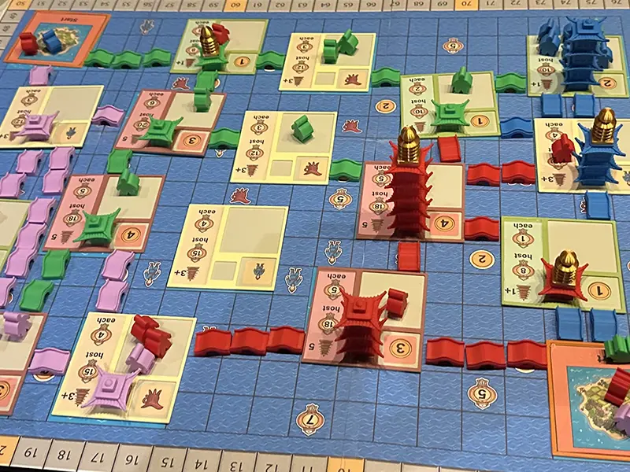
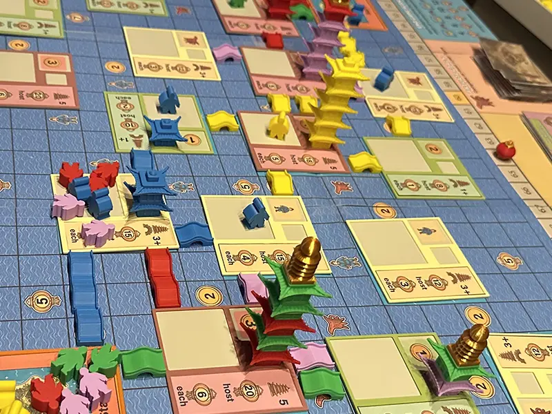
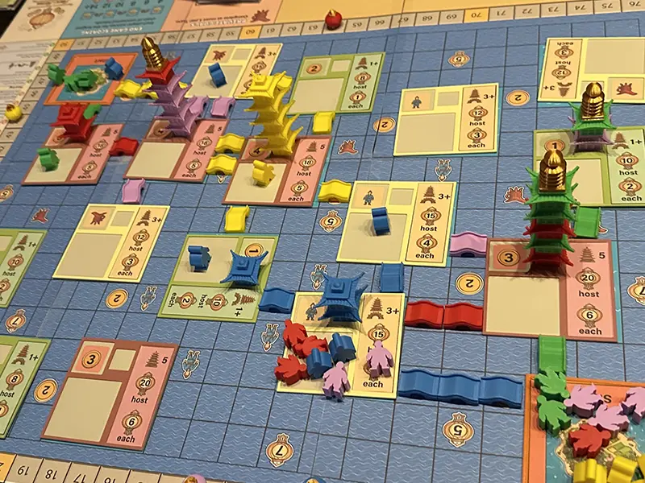
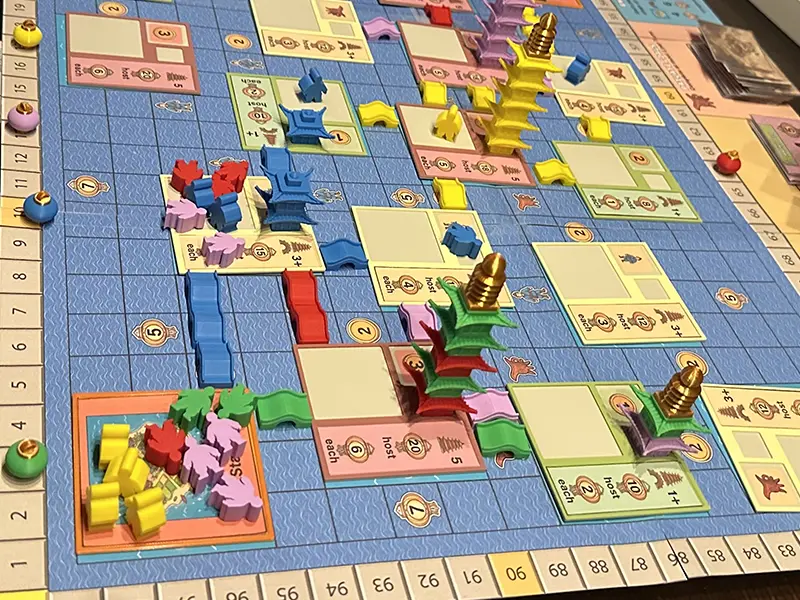
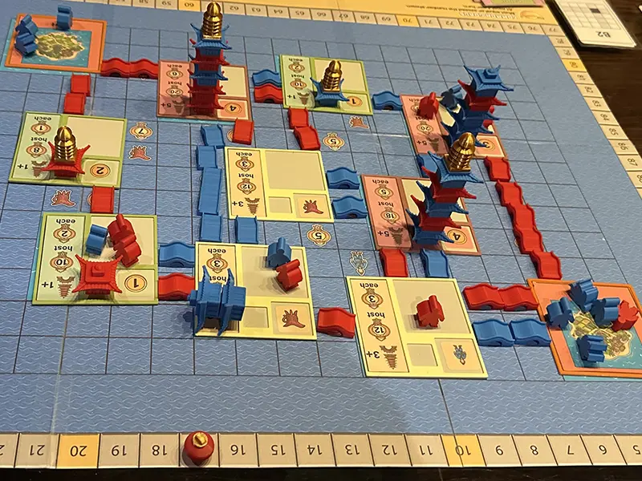

A breathtaking Japanese garden comes alive as rival festival organisers battle to light up the night.
Firefly Festival transports players to a breathtaking Japanese garden at night, where rival festival organisers compete to build bridges between island sanctuaries, raise towering pagodas, and call the most spectacular celebrations under cascading Firefly Festival blossoms. The theme is vivid and cohesive — every mechanism connects directly to the world on the table. Bridges create genuine invasion routes into rival territory, pagodas define the economic engine, and the festival itself is the moment everything comes alive.
At its core, Firefly Festival is a worker movement and network-building game with a beautifully compressed action set. Players choose from just four actions each turn — Build Bridge, Build Pagoda, Hold Festival, or Move — yet every decision ripples across the board in ways that feel meaningful rather than administrative. The festival mechanism is what sets the game apart: when a player calls a festival, all workers present on that island score points for their owners, but every worker on directly connected islands scores for the caller. This creates a dynamic tension between building your own presence and parasitically extending your network into territories others have developed, rewarding clever positioning over raw aggression. What makes Firefly Festival compelling to a publisher is the combination of genuine strategic depth with an exceptionally low rules overhead. The auxiliary action system — where players can complete goals or leverage the Raven token for economic recovery — layers meaningful decisions onto every turn without slowing the game down. Thirty unique asymmetric character cards with distinct powers ensure no two games play identically, while a scaling fish economy controls the pace of power turns without requiring complex bookkeeping. Games finish cleanly in around sixty minutes at all player counts. Firefly Festival sits squarely in the sweet spot occupied by Wingspan, Cascadia, and Isle of Cats — games with strong visual identities, accessible rules, and enough strategic texture to reward repeated play. It appeals to couples and families looking for their first "serious" game, as well as experienced hobbyists who appreciate elegant design. The production already features 3D printed pagoda components with gold finials, a rich private goal card deck, and a fully illustrated cast of asymmetric characters — making it shelf-ready and visually distinctive in a crowded market.





Sign up to be notified when Firefly Festival is available for public playtesting at conventions, or when it finds a publisher.